Arcade collection
The little lives inside a TokenTV clock. 105 scenes and variations: everyday previews, and a few mysteries left sealed.
Everyday
Shown at the clock's own pace, with sample readings.
| Clawd | Codex | Grok | Copilot | Anti | |
|---|---|---|---|---|---|
| At workwhile its tokens go up | 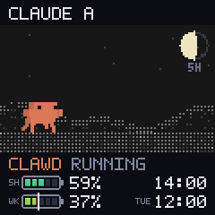 runs | 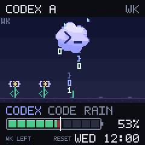 rains code on its flowers | 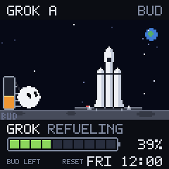 refuels the rocket | 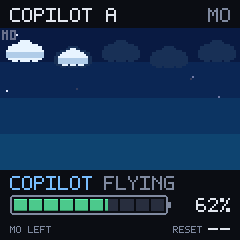 flies under the clouds | 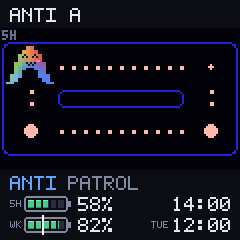 patrols the maze |
| Mission controlanother Grok work scene | 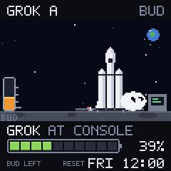 works the console | ||||
| Nearly outpast 90% and still working | 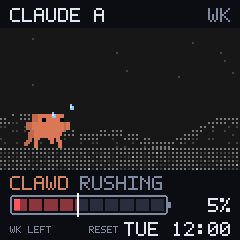 rushes | 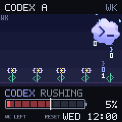 rains faster | 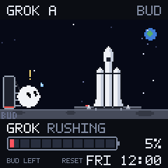 hurries between tank and rocket | 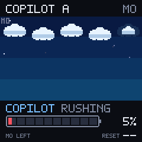 flies low and wobbles | 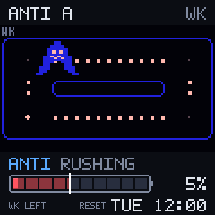 turns blue |
| Restingnothing to do | 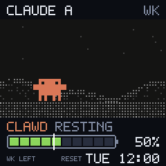 looks around | 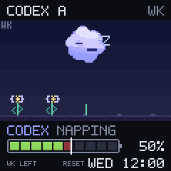 naps | 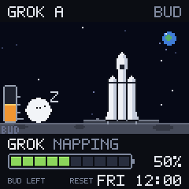 naps | 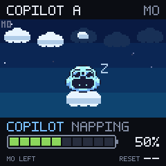 naps on a cloud | 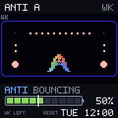 bounces |
| Resting, tooanother idle routine | dances and meditates | 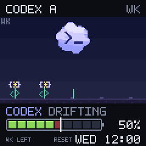 drifts | 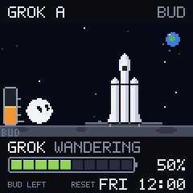 takes a walk | looks around | 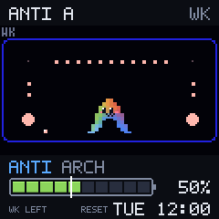 watches the tunnel |
| Taking it easyone more idle routine | breakdances, waves and thinks | 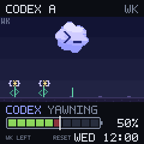 stretches and yawns | 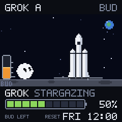 gazes at Earth | 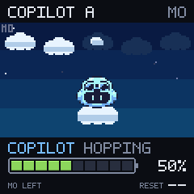 hops | 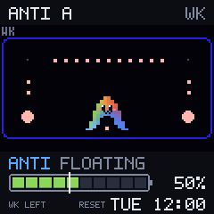 floats above the maze |
| An umbrellaan occasional Anti idle scene | 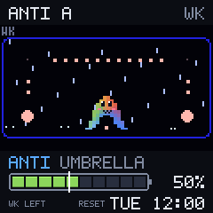 shelters the dots | ||||
| Tucked inAnti resting at night | 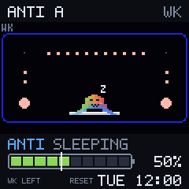 settles under a blanket | ||||
| Plenty leftunder 20% used | 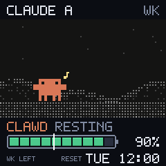 looks cheerful | 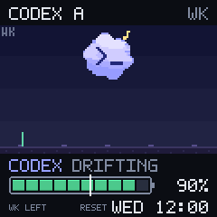 looks cheerful | 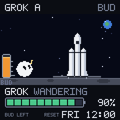 looks cheerful | 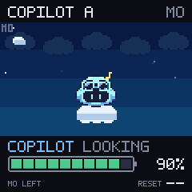 looks cheerful | 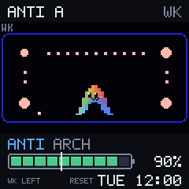 smiles |
| A little worriedover 90% used, resting | 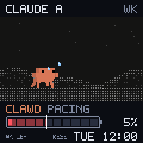 paces | 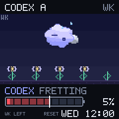 pants | 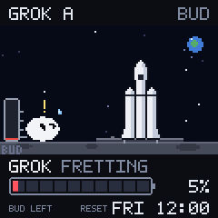 frets by the rocket | 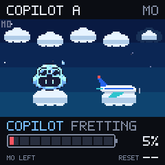 worries beside the plane | 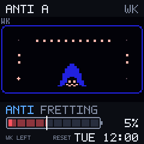 hides its face |
| Late at night2 to 5 a.m., working | 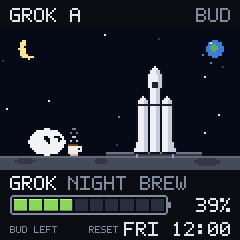 a coffee by the rocket | 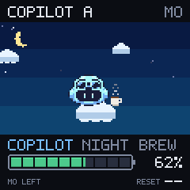 a coffee on a cloud | |||
| Running lowAnti crosses 95% used | 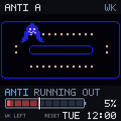 flashes in alarm | ||||
| Reset ticketa Codex reset credit is available | 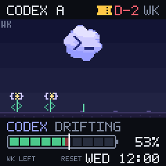 shows its ticket and expiry | ||||
| A resetthe limit comes back | 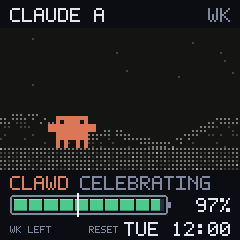 celebrates | 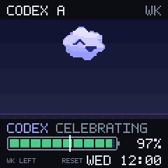 celebrates | 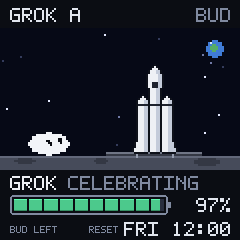 celebrates | 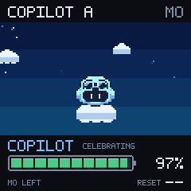 celebrates | 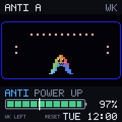 celebrates |
| All usedthe limit hits 100% | 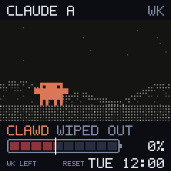 flops down | 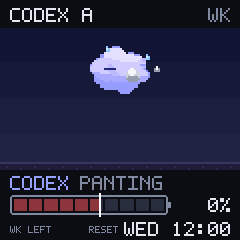 pants | 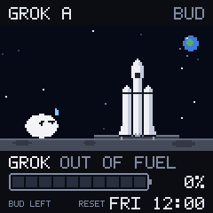 out of fuel | 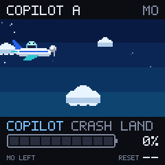 crash-lands | 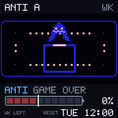 game over |
Claude Code & Codex reactions
Claude Code reactions need the plugin on macOS or Linux. Codex supports the completion bow through notify. The courtroom is an animation, not a safety check. Connect your agent.
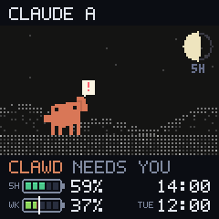
Needs youClaude CodeA permission prompt or question is waiting.
After five minutes, it starts hopping.
After fifteen minutes, it holds up a sign.
A turn finishes, and Clawd bows.
The other completion bow.
A completed turn, with Codex notify connected.
/tokentv pet
/tokentv snack
A risky command gets a courtroom animation.
The other courtroom scene.
A file-deleting command succeeds.
The other deleted-file reaction.
A rude or shouted prompt turns its back.
A calm prompt, or a little time, brings it back.
A tool call fails.
The conversation is being compacted.
Claude Code's current thinking word.
Usage & work breaks
The current pace would use up a limit soon.
A tick marks the even weekly pace.
The gap beyond an even pace turns red.
A reminder after an hour of continuous work.
The other work-break reminder.
Seasonal outfits
Costumes and a seasonal backdrop.
Hats, snow and a tree.
Korean New Year clothes and decorations.
◆ Rare · 9
A hint and a blurred glimpse.
◆ Unique · 10
Names only.
★ Legend · 9
9 mysteries. Good luck.